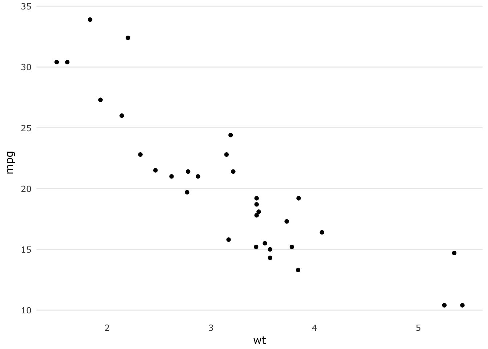
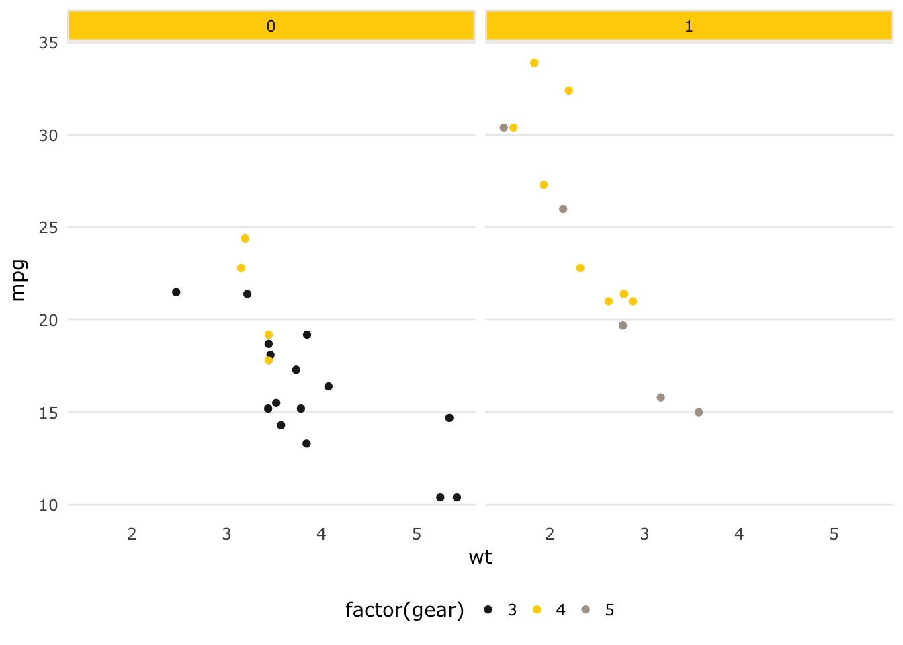
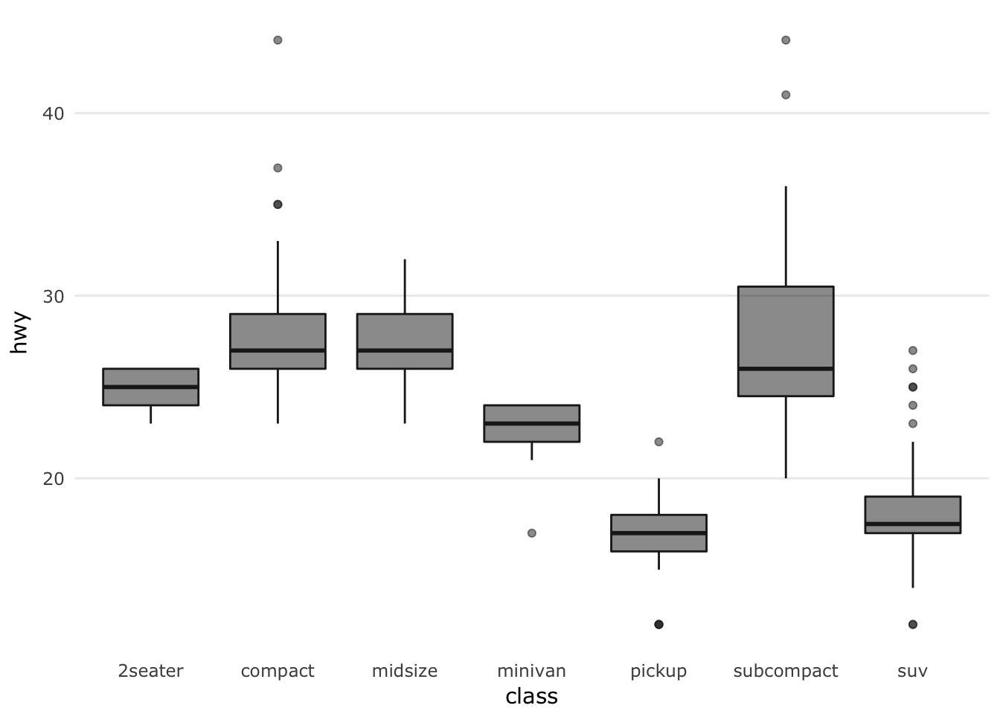
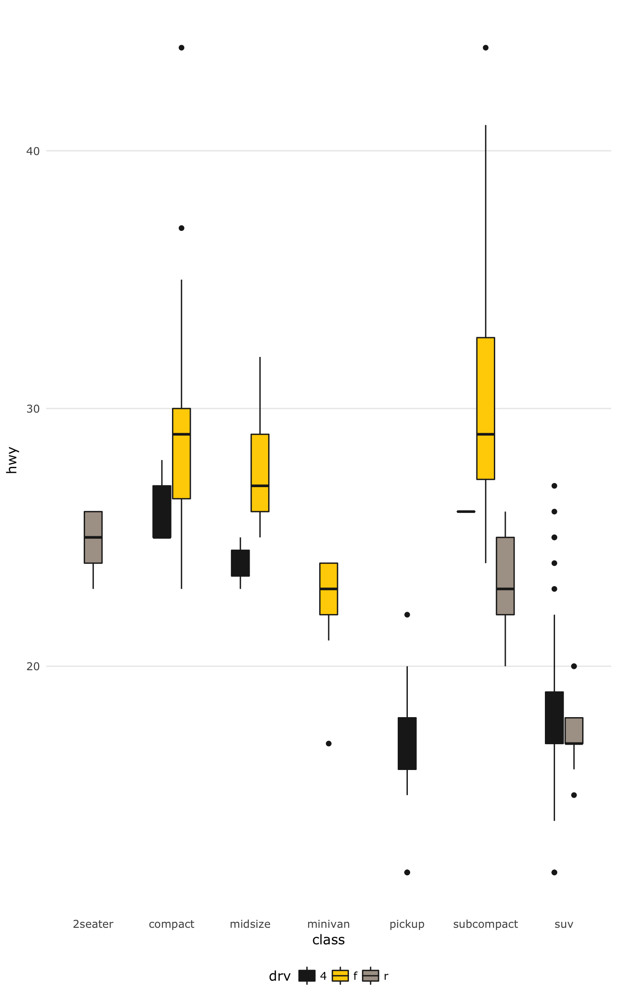
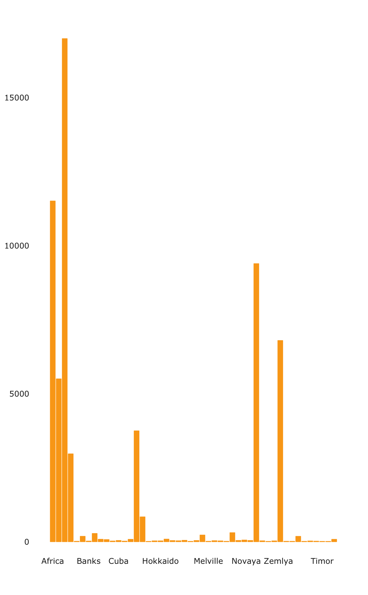
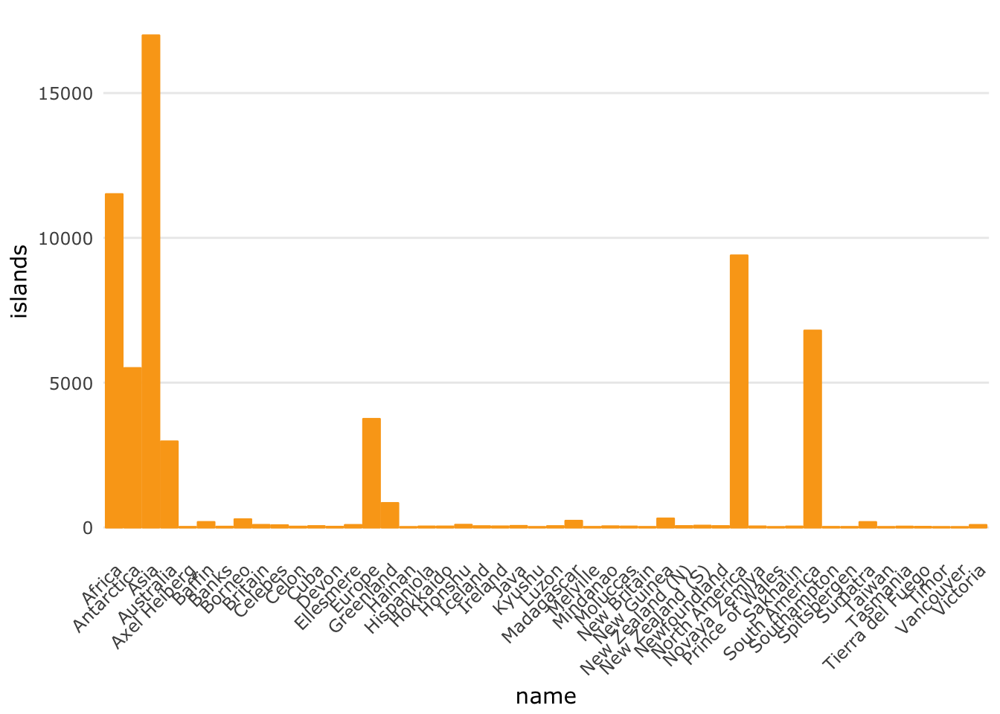

theme.usq
Adam H Sparks
2017-12-15
Introduction
The goal of theme.usq is to provide University of Southern Queensland (USQ) staff and students a quick and easy way to apply USQ colours and typography to graphs created in R using the base graphics package or ggplot2 while providing clear graphs for reports and presentations. All of the colours provided are defined in USQ’s Visual Identity Colour Palette, but do not all appear in the same order to maintain usability for the purposes of graphing.
This package has been tested on macOS, Ubuntu Linux and USQ computers using Windows 7. For Linux users, if you have not installed the MS Core Fonts, you will need to do that for this package to function properly and generate the graphs with the proper typography. Windows and macOS users should be ready to go with just the installation of this package.
Examples
Example 1: Scatterplots of discrete data
Using ggplot2 and theme_usq()
Plot car weights by miles per gallon.

Plot car weights by miles per gallon and facet by Transmission (0 = automatic, 1 = manual) using the usq_palette in the scale_colour_manual discrete scale function to use USQ colours for the graph.
p1 <- ggplot(mtcars) +
geom_point(aes(
x = wt,
y = mpg,
colour = factor(gear)
)) +
scale_colour_manual(values = usq_palette) +
facet_wrap(~ am) +
theme_usq()
p1
Example 2: Heatmaps or other continuous data
Using ggplot2 and theme_usq()
Using the usq.theme’s theme_usq() for ggplot2, plot values using the usq_fill_gradient to use USQ colours for continuous values in the graph. Two types of gradients are included, warm and cool for both scale_fill_gradient() and scale_colour_gradient() as necessary.


Example 3: Heatmaps using other colour palettes
Using ggplot2 and theme_usq()
theme_usq() can be used with any colour palette that you wish to use, while still applying the graph styling and typography to the graph.
Use the default ggplot2 colour scheme to fill the density plot while using the theme_usq() to theme the graph.
p3 <- ggplot(faithfuld, aes(waiting, eruptions)) +
geom_raster(aes(fill = density), interpolate = TRUE) +
theme_usq()
p3
Example 5: Boxplots
Using boxplot_usq()
Plot the highway miles per gallon (mpg) of 38 popular car models in the US by class of car.
Using ggplot2 and theme_usq()
p5 <- ggplot(mpg, aes(class, hwy)) +
geom_boxplot(fill = usq_palette[1],
colour = usq_palette[1],
alpha = 0.5) +
theme_usq()
p5
Use the USQ colours to fill the box-plots while using drv (e.g., 4-wheel drive, front-wheel drive or rear-wheel drive) for the box-plot colour.
p5.1 <- ggplot(mpg, aes(class, hwy)) +
geom_boxplot(aes(fill = drv), colour = usq_palette[1]) +
scale_fill_manual(values = usq_palette) +
theme_usq()
p5.1
Example 6: Timeseries
Using ggplot2 and theme_usq() to plot timeseries lines
This example uses discrete colours for each variable of interest. While possible to do with base R graphics, ggplot2 simplifies the process greatly, so it is the only example provided and suggested for use.
p6 <- ggplot(economics_long, aes(date, value01, colour = variable)) +
geom_line() +
scale_colour_manual(values = usq_palette) +
theme_usq()
p6
Example 7: Barplots
Using barplot_usq()
Plot the areas in thousands of square miles of landmasses which exceed 10,000 sqm.

Using ggplot2 and theme_usq()
Plot the areas in thousands of square miles of landmasses which exceed 10,000 sqm.
library(tibble)
islands_df <- as.data.frame(islands)
islands_df <- rownames_to_column(islands_df, "name")
ggplot(islands_df, aes(x = name, y = islands)) +
geom_bar(stat = "identity",
colour = usq_palette[5],
fill = usq_palette[5]) +
theme_usq() +
theme(axis.text.x = element_text(angle = 45, hjust = 1))
Using theme_usq() in presentations
The default settings for theme_usq() are fine for printed materials such as reports, but if you wish to use it in a presentation you can use the ggplot2 option base_size = to increase the size of the fonts, points and lines in the graphs.